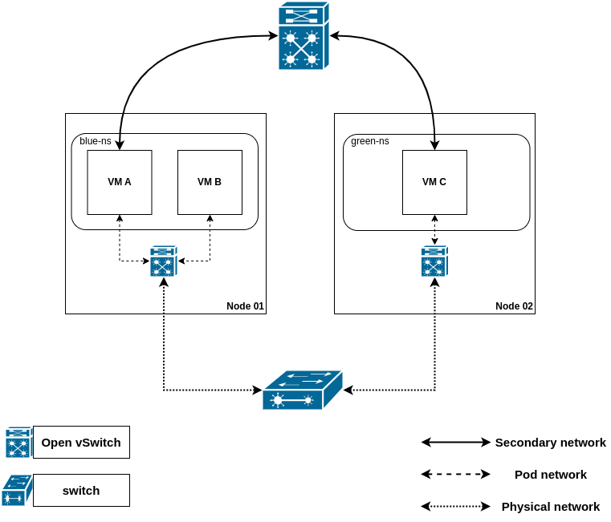
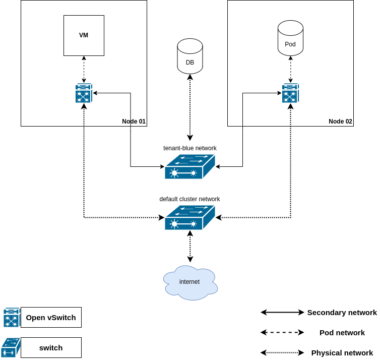

Multihoming¶
Introduction¶
Multihoming allows the configuration of secondary-network interfaces for K8s pods. OVN-Kubernetes secondary-network has three configurable topologies: layer 3, layer 2, or localnet.
- A layer 3 topology is a simplification of the topology for the cluster default network - but without egress.
- A layer 2 topology provides an isolated (no egress) cluster-wide layer2 network providing east-west traffic to the cluster workloads.
- A localnet topology is based on layer 2 topology, but also allows connecting to an existent (configured) physical network to provide north-south traffic to the workloads.
For layer 2 and localnet topologies, multihoming also allows IP features on secondary interfaces such as static IP allocation and persistent IP addresses for virtualization workloads.
To allow pods to have multiple network interfaces, the user must provide the
configurations specifying how to connect to these networks; these
configurations are defined in a CRD named NetworkAttachmentDefinition, defined by
the Kubernetes Network Custom Resource Definition De-facto Standard.
[!NOTE] layer 2 and layer 3 topologies are overlays - thus, they do not need any previous physical network configuration.
Prerequisites¶
Always check the dependencies on the Requirements page
Motivation¶
Multihoming is essential when you need more than one network interface on your pods. This can be useful for various use cases, such as virtual network functions (VNFs), firewalls, or virtualization (virt) where the default cluster network might not be suitable.
In OVN-K, multihoming supports several virt-specific features. These include persistent IP addresses for virtualization workloads, ensuring that VMs retain their IP addresses even when they move across nodes. This enhances workload mobility and minimizes disruptions.
Multihoming is also compatible with the multi-network policy API, which can provide further security rules on the traffic.
User-Stories¶
- As a Cluster-Admin, I want to configure secondary networks for specific pods so that I can enable specialized/sensitive workloads with distinct network requirements.
- As a Cluster-Admin, I want to facilitate seamless live migration of VMs within so that I can maintain established TCP connections and preserve VM IP configurations during migration.
User-Cases¶
- cluster-wide overlay network on layer 2:
In this case example, two VMs from different namespaces - VMA and VMC - are connected over a secondary-network.
VMB is not exposed to this traffic.

- cluster-wide localnet network:
In this case example, Pod and VM workloads accessing a relational DB reachable via the physical network (i.e. deployed
outside Kubernetes).

{kind=link}
{kind=link}
How to enable this feature on an OVN-Kubernetes cluster?¶
The multi-network feature must be enabled in the OVN-Kubernetes configuration.
Please use the Feature Config option enable-multi-network under OVNKubernetesFeatureConfig config to enable it.
Workflow Description¶
After a pod is scheduled on a particular Kubernetes node, kubelet will invoke
the meta-plugin installed on the cluster (such as Multus) to
prepare the pod for networking.
The meta-plugin will invoke the CNI responsible for setting up the pod's default cluster network.
After that, the meta-plugin iterates the list of secondary networks, invoking the corresponding CNI implementing
the logic to attach the pod to that particular secondary-network. The CNI will use the details specified on
the network-attachment-definition in order to do that.
[!NOTE] networks are not namespaced - i.e. creating multiple
network-attachment-definitions with different configurations pointing at the same network (sameNetConf.Nameattribute) is not supported.
Implementation Details¶
User facing API Changes¶
There are no user facing API Changes.
OVN-Kubernetes Implementation Details¶
Below you will find example attachment configurations for each of the current topologies OVN-K allows for secondary networks.
Routed - layer 3 - topology¶
This topology is a simplification of the topology for the cluster default network - but without egress.
There is a logical switch per node - each with a different subnet - and a router interconnecting all the logical switches.
The following net-attach-def configures the attachment to a routed secondary network.
apiVersion: k8s.cni.cncf.io/v1
kind: NetworkAttachmentDefinition
metadata:
name: l3-network
namespace: ns1
spec:
config: |2
{
"cniVersion": "1.0.0",
"name": "tenantblue",
"type": "ovn-k8s-cni-overlay",
"topology":"layer3",
"subnets": "10.128.0.0/16/24,10.129.0.0/16/24",
"mtu": 1300,
"netAttachDefName": "ns1/l3-network"
}
Network Configuration reference:¶
name(string, required): the name of the network. This attribute is not namespaced.type(string, required): "ovn-k8s-cni-overlay".topology(string, required): "layer3".subnets(string, required): a comma-separated list of cluster subnets from which per-node subnets are allocated. Each node receives one subnet per IP family.mtu(integer, optional): explicitly set MTU to the specified value. Defaults to the value chosen by the kernel.netAttachDefName(string, required): must match<namespace>/<net-attach-def name>of the surrounding object.
[!NOTE] The
subnetsattribute defines the cluster subnet allocation pool for each IP family. Each node receives one subnet per IP family from that pool. In the example above, the IPv4 pool consists of two/16cluster subnets, each divided into/24per-node subnets. Cluster subnets must not overlap, and all subnets in the same IP family must use the same per-node subnet prefix length.[!NOTE] routed - layer3 - topology networks only allow for east/west traffic.
Switched - layer 2 - topology¶
This topology interconnects the workloads via a cluster-wide logical switch.
The following net-attach-def configures the attachment to a layer 2 secondary network.
apiVersion: k8s.cni.cncf.io/v1
kind: NetworkAttachmentDefinition
metadata:
name: l2-network
namespace: ns1
spec:
config: |2
{
"cniVersion": "1.0.0",
"name": "tenantyellow",
"type": "ovn-k8s-cni-overlay",
"topology":"layer2",
"subnets": "10.100.200.0/24",
"mtu": 1300,
"netAttachDefName": "ns1/l2-network",
"excludeSubnets": "10.100.200.0/29"
}
Network Configuration reference¶
name(string, required): the name of the network. This attribute is not namespaced.type(string, required): "ovn-k8s-cni-overlay".topology(string, required): "layer2".subnets(string, optional): a comma separated list of subnets. When multiple subnets are provided, the user will get an IP from each subnet.mtu(integer, optional): explicitly set MTU to the specified value. Defaults to the value chosen by the kernel.netAttachDefName(string, required): must match<namespace>/<net-attach-def name>of the surrounding object.excludeSubnets(string, optional): a comma separated list of CIDRs / IPs. These IPs will be removed from the assignable IP pool, and never handed over to the pods.allowPersistentIPs(boolean, optional): persist the OVN-Kubernetes assigned IP addresses in aipamclaims.k8s.cni.cncf.ioobject. This IP addresses will be reused by other pods if requested. Useful for KubeVirt VMs. Only makes sense if thesubnetsattribute is also defined.
[!NOTE] when the subnets attribute is omitted, the logical switch implementing the network will only provide layer 2 communication, and the users must configure IPs for the pods. Port security will only prevent MAC spoofing.
[!NOTE] switched - layer2 - secondary networks only allow for east/west traffic.
Switched - localnet - topology¶
This topology interconnects the workloads via a cluster-wide logical switch to a physical network.
The following net-attach-def configures the attachment to a localnet secondary network.
apiVersion: k8s.cni.cncf.io/v1
kind: NetworkAttachmentDefinition
metadata:
name: localnet-network
namespace: ns1
spec:
config: |2
{
"cniVersion": "1.0.0",
"name": "tenantblack",
"type": "ovn-k8s-cni-overlay",
"topology":"localnet",
"subnets": "202.10.130.112/28",
"vlanID": 33,
"mtu": 1500,
"netAttachDefName": "ns1/localnet-network"
}
Note that in order to connect to the physical network, it is expected that ovn-bridge-mappings is configured appropriately on the chassis for this localnet network.
Network Configuration reference¶
name(string, required): the name of the network.type(string, required): "ovn-k8s-cni-overlay".topology(string, required): "localnet".subnets(string, optional): a comma separated list of subnets. When multiple subnets are provided, the user will get an IP from each subnet.mtu(integer, optional): explicitly set MTU to the specified value. Defaults to the value chosen by the kernel.netAttachDefName(string, required): must match<namespace>/<net-attach-def name>of the surrounding object.excludeSubnets(string, optional): a comma separated list of CIDRs / IPs. These IPs will be removed from the assignable IP pool, and never handed over to the pods.vlanID(integer, optional): assign VLAN tag. Defaults to none.allowPersistentIPs(boolean, optional): persist the OVN-Kubernetes assigned IP addresses in aipamclaims.k8s.cni.cncf.ioobject. This IP addresses will be reused by other pods if requested. Useful for KubeVirt VMs. Only makes sense if thesubnetsattribute is also defined.physicalNetworkName(string, optional): the name of the physical network to which the OVN overlay will connect. When omitted, it will default to the value of the localnet network name on the NAD's.spec.config.name.
[!NOTE] when the subnets attribute is omitted, the logical switch implementing the network will only provide layer 2 communication, and the users must configure IPs for the pods. Port security will only prevent MAC spoofing.
[!NOTE] updates to the network specification require the attached workloads restart. All the network-attachment-definitions pointing to the same network must have a consistent configuration, and then workloads must be restarted.
Setting a secondary-network on the pod¶
The user must specify the secondary-network attachments via the
k8s.v1.cni.cncf.io/networks annotation.
The following example provisions a pod with two secondary attachments, one for each of the attachment configurations presented in Configuring secondary networks.
apiVersion: v1
kind: Pod
metadata:
annotations:
k8s.v1.cni.cncf.io/networks: l3-network,l2-network
name: tinypod
namespace: ns1
spec:
containers:
- args:
- pause
image: registry.k8s.io/e2e-test-images/agnhost:2.36
imagePullPolicy: IfNotPresent
name: agnhost-container
Setting static IP addresses on a pod¶
The user can specify attachment parameters via network-selection-elements, namely IP, MAC, and interface name.
Refer to the following yaml for an example on how to request a static IP for a pod, a MAC address, and specify the pod interface name.
apiVersion: v1
kind: Pod
metadata:
annotations:
k8s.v1.cni.cncf.io/networks: '[
{
"name": "l2-network",
"mac": "02:03:04:05:06:07",
"interface": "myiface1",
"ips": [
"192.0.2.20/24"
]
}
]'
name: tinypod
namespace: ns1
spec:
containers:
- args:
- pause
image: registry.k8s.io/e2e-test-images/agnhost:2.36
imagePullPolicy: IfNotPresent
name: agnhost-container
[!NOTE] the user can specify the IP address for a pod's secondary attachment only for an L2 or localnet attachment.
[!NOTE] specifying a static IP address for the pod is only possible when the attachment configuration does not feature subnets.
Multiple interfaces on the same network¶
OVN-Kubernetes supports attaching a pod to the same non-primary user-defined network multiple times, allowing the pod to have multiple interfaces connected to the same network. This is useful for workloads that require multiple network interfaces on the same network for advanced networking scenarios. Note that layer 2, layer 3 and localnet networks are all supported.
To request multiple interfaces on the same network, specify the network
multiple times in the k8s.v1.cni.cncf.io/networks annotation:
apiVersion: v1
kind: Pod
metadata:
annotations:
k8s.v1.cni.cncf.io/networks: l3-network,l3-network
name: multi-nic-pod
namespace: ns1
spec:
containers:
- args:
- pause
image: registry.k8s.io/e2e-test-images/agnhost:2.36
imagePullPolicy: IfNotPresent
name: agnhost-container
In this example, the pod will have two interfaces both connected to the
l3-network. Each interface will receive its own IP address from the
network's subnet.
Persistent IP addresses for virtualization workloads¶
OVN-Kubernetes provides persistent IP addresses for virtualization workloads, allowing VMs to have the same IP addresses when they migrate, when they restart, and when they stop, the resume operation.
For that, the network admin must configure the network accordingly - the
allowPersistentIPs flag must be enabled in the NAD of the network. As with the
other network knobs, all NADs pointing to the same network must feature the
same configuration - i.e. all NADs in the network must either allow (or reject)
persistent IPs.
The client application (which creates the
VM, and manages its lifecycle) is
responsible for creating the ipamclaims.k8s.cni.cncf.io object, and point to
it in the network selection element upon pod creation;
OVN-Kubernetes will then persist the IP addresses it has allocated the pod in the IPAMClaim. This flow
is portrayed in the sequence diagram below.
sequenceDiagram
actor user
participant KubeVirt
participant apiserver
participant OVN-Kubernetes
user->>KubeVirt: createVM(name=vm-a)
KubeVirt-->>user: OK
KubeVirt->>apiserver: createIPAMClaims(networks=...)
apiserver-->>KubeVirt: OK
KubeVirt->>apiserver: createPOD(ipamClaims=...)
apiserver-->>KubeVirt: OK
apiserver->>OVN-Kubernetes: reconcilePod(podKey=...)
OVN-Kubernetes->>OVN-Kubernetes: ips = AllocateNextIPs(nad.subnet)
OVN-Kubernetes->>apiserver: IPAMClaim.UpdateStatus(status.ips = ips)
apiserver-->>OVN-Kubernetes: OK
Whenever a VM is migrated, restarted, or stopped / then started a new pod will
be scheduled to host the VM; it will also point to the same IPAMClaims, and
OVN-Kubernetes will fulfill the IP addresses being requested by the client.
This flow is shown in the sequence diagram below.
sequenceDiagram
actor user
participant KubeVirt
participant apiserver
participant OVN-Kubernetes
user->>KubeVirt: startVM(vmName) or migrateVM(vmName)
KubeVirt-->>user: OK
note over KubeVirt: podName := "launcher-"
KubeVirt->>apiserver: createPod(name=podName, ipam-claims=...)
apiserver-->>KubeVirt: OK
apiserver->>OVN-Kubernetes: reconcilePod(podKey=...)
OVN-Kubernetes->>OVN-Kubernetes: ipamClaim := readIPAMClaim(claimName)
OVN-Kubernetes->>OVN-Kubernetes: allocatePodIPs(ipamClaim.Status.IPs)
Managing the life-cycle of the IPAMClaims objects is the responsibility of the
client application that created them in the first place. In this case, KubeVirt.
This feature is described in detail in the following KubeVirt design proposal.
IPv4 and IPv6 dynamic configuration for virtualization workloads on L2 primary UDN¶
For virtualization workloads using a primary UDN with layer2 topology ovn-k configure some DHCP and NDP flows to server ipv4 and ipv6 configuration for them.
For both ipv4 and ipv6 the following parameters are configured using DHCP or RAs: - address - gateway - dns (read notes below) - hostname (vm's name) - mtu (taken from network attachment definition)
Configuring dns server¶
By default, the DHCP server at ovn-kubernetes will configure the kubernetes
default dns service kube-system/kube-dns as the name server. This can be
overridden with the following command line options:
- dns-service-namespace
- dns-service-name
Limitations¶
OVN-Kubernetes currently does not support:
- updates to the network selection elements lists - i.e.
k8s.v1.cni.cncf.io/networksannotation - external IPAM - i.e. the user can't define the IPAM attribute in the configuration. They must use the subnets attribute.
- IPv6 link local addresses not derived from the MAC address as described in RFC 2373, like Privacy Extensions defined by RFC 4941, or the Opaque Identifier generation methods defined in RFC 7217.